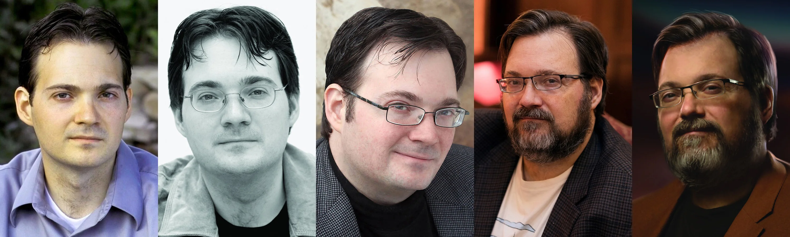
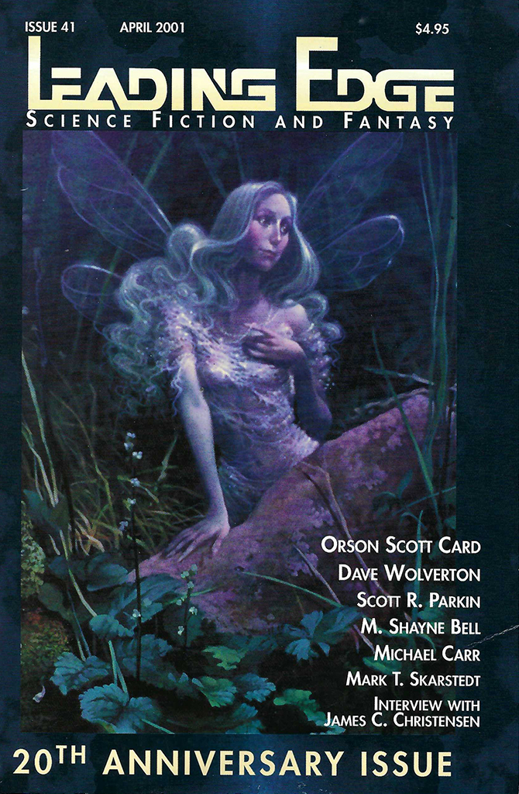
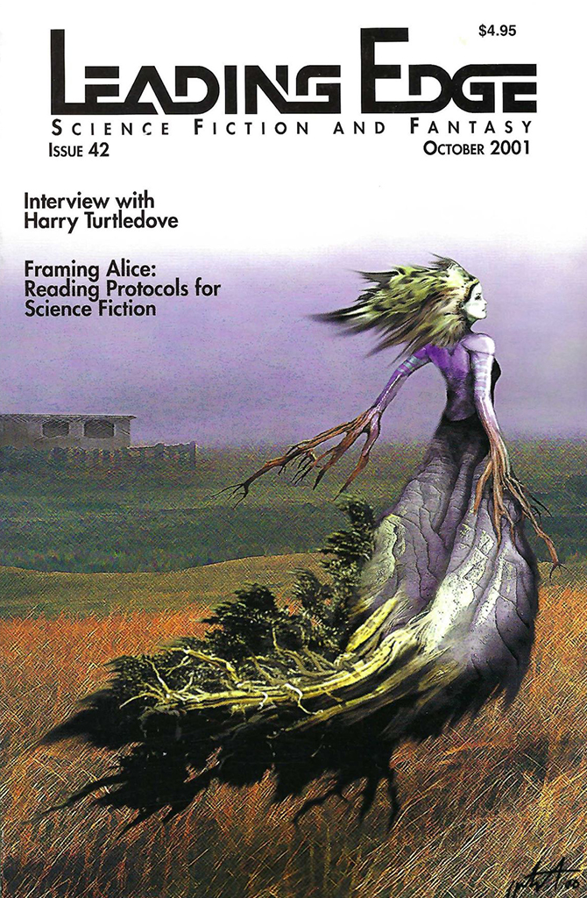
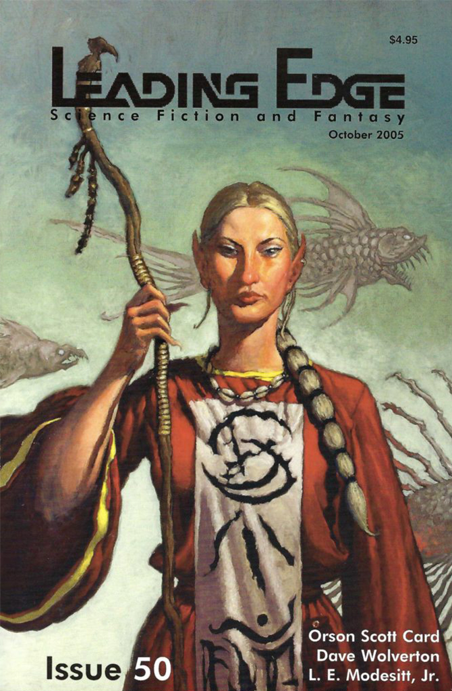
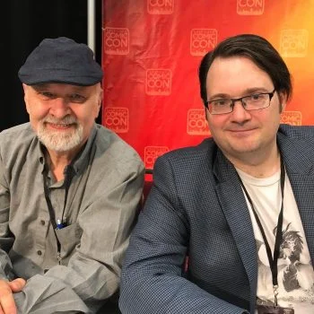
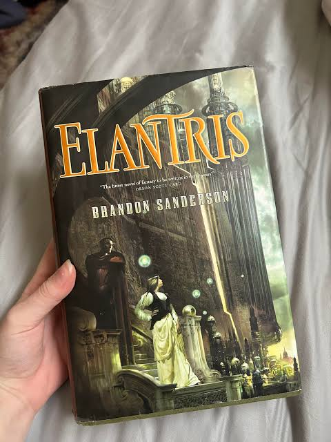
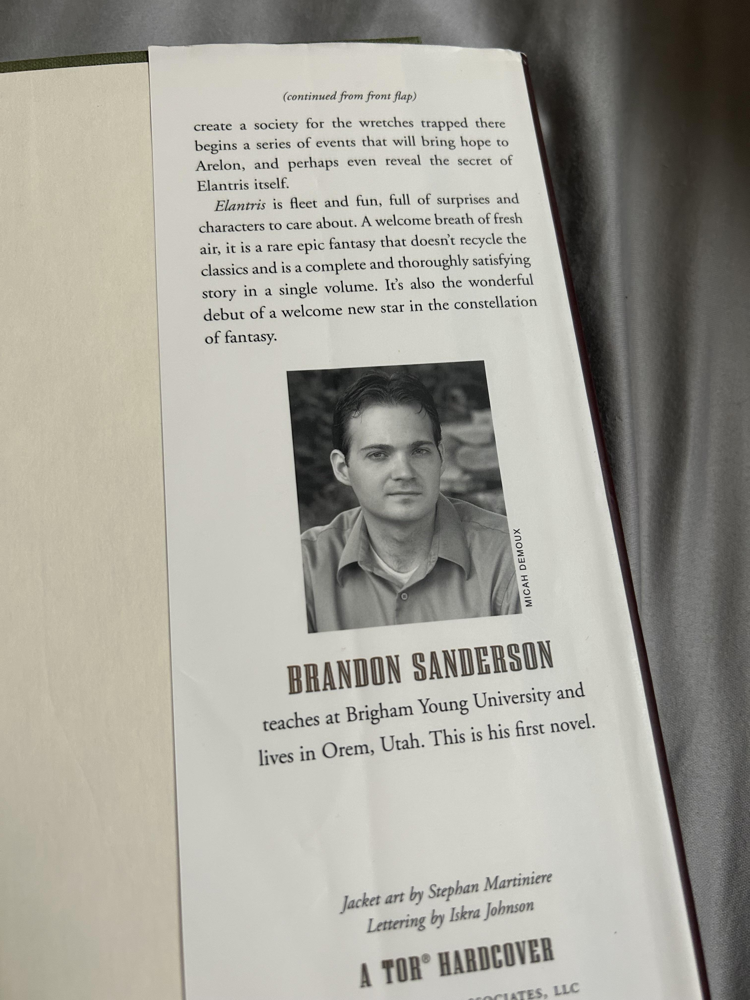
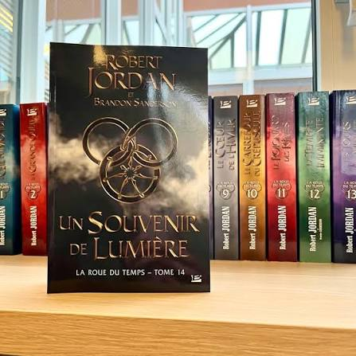
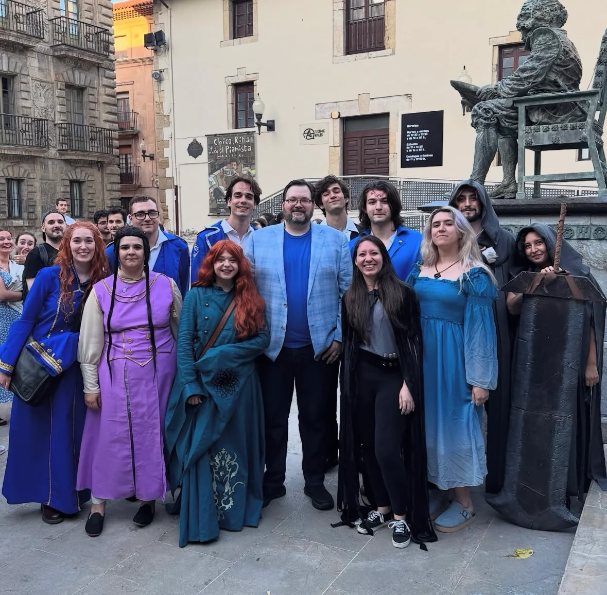

L'architecte du Cosmere
Brandon Sanderson
Écrivain américain de fantasy, forgeron de mondes reliés par un univers commun, le Cosmere. Dès Fils-des-Brumes à L'Archive des Tempêtes, il construit une mythologie où la magie obéit à des lois aussi rigoureuses que la physique.
“The purpose of a storyteller is not to tell you how to think, but to give you questions to think upon.”
Brandon Sanderson, The Way of Kings
Une vie forgée dans les mots

Chapitre I
Jeunesse et découverte
Il est né le 19 décembre 1975, à Lincoln, au Nebraska. Enfant, il adorait lire, mais il
a perdu l'intérêt pour le genre d'œuvres qu'on lui suggérait habituellement, si bien
qu'au secondaire, il évitait d'ouvrir un livre autant que possible. Tout a changé
lorsqu'il avait 13 ou 14 ans : une enseignante perspicace, madame Reader, lui a offert
l'occasion de lire (Fendragon), de
Barbara Hambly. Brandon a savouré ce livre du début à la fin, puis s'est mis à
en chercher d'autres du même genre.
Il a ainsi découvert des auteurs comme Robert
Jordan, Melanie Rawn, David Eddings, Anne McCaffrey et Orson Scott Card. Il est demeuré
un lecteur avide jusqu'à la fin de ses études secondaires. Il aimait tant la fantasy
épique qu'il a même tenté d'écrire lui-même quelques récits. Ses premières tentatives,
dit-il, étaient exécrables.
En 1994, Brandon s'est inscrit en biochimie à la Brigham Young University (BYU). Entre 1995 et 1997, il a pris une année sabbatique pour servir comme missionnaire au sein de l'Église de Jésus-Christ des Saints des Derniers Jours. Brandon raconte souvent que c'est pendant son séjour à Séoul, en Corée, qu'il a réalisé qu'il ne s'ennuyait aucunement de la chimie, mais qu'il s'ennuyait beaucoup de l'écriture. À son retour à la BYU, il est devenu étudiant en anglais, au grand désarroi de sa mère, qui avait toujours espéré qu'il devienne médecin.
Brigham Young University, Édifice Benson, siège des départements de chimie et de biochimie



Chapitre II
Les premiers pas
Brandon a pris l'écriture au sérieux, travaillant de nuit comme concierge dans un hôtel, car cet emploi lui permettait d'écrire pendant ses heures de travail. Durant cette période, il fréquentait l'université à temps plein le jour, travaillait de nuit pour payer ses études, et écrivait tout ce qu'il pouvait. Il confesse qu'il n'avait pratiquement aucune vie sociale, mais il a néanmoins terminé sept romans pendant cette période. Brandon a soumis plusieurs de ses écrits pour publication… et a accumulé un bon nombre de lettres de refus. Malgré tout, il est demeuré un écrivain dévoué.
Faire du bénévolat pour The Leading Edge, la revue de fantasy et de science-fiction de la BYU, fut une expérience merveilleuse pour lui. Il a lu de nombreux textes soumis à la revue, y a forgé des amitiés durables, et y a occupé le poste de rédacteur en chef durant sa dernière année.
Chapitre III - Fin des années 1990
Le mentorat et les conventions
Brandon a beaucoup appris sur les aspects commerciaux du métier d'écrivain grâce aux cours de David Farland, auteur de la populaire saga Runelords. Un des conseils que Dave lui a donnés fut d'assister à des conventions comme la WorldCon et la World Fantasy, afin de tisser des liens avec des professionnels de l'industrie. Brandon et un petit groupe d'amis qui aspiraient eux aussi à devenir écrivains ont commencé à le faire. C'est d'ailleurs dans l'une de ces conventions qu'il ferait plus tard la connaissance à la fois de son agent actuel et de l'un de ses éditeurs.

Portrait de David Farland et Brandon Sanderson
Chapitre IV - 2003 - 2005
L'Appel
C'est en 2003, alors que Brandon poursuivait des études supérieures à la BYU, qu'il a reçu l'appel d'un éditeur de Tor souhaitant acheter l'un de ses livres. Brandon avait soumis le manuscrit un an et demi plus tôt, et avait presque perdu espoir d'obtenir une réponse, si bien qu'il fut à la fois surpris et ravi de recevoir cette offre. En mai 2005, Brandon a tenu entre ses mains son premier roman publié, Elantris. Tor a également publié la trilogie Fils-des-Brumes, et a fait paraître depuis Warbreaker, La Voie des rois, The Rithmatist, Le Livre des Radieux, Arcanum Unbounded: The Cosmere Collection, Justicière, et Rythme de guerre, d'autres titres de Sanderson devant suivre dans les années à venir.
En 2004, après l'obtention de sa maîtrise en création littéraire à la Brigham Young University, Brandon a été invité à enseigner le cours qu'il avait lui-même suivi comme étudiant de premier cycle avec Dave Farland. Malgré son horaire chargé, Brandon continue d'enseigner cette unique section de création littéraire axée sur la science-fiction et la fantasy, car il aime aider les écrivains en herbe. Ça lui permet aussi de changer d'air, dit-il.


Chapitre V - 2007 - 2013
Nouveaux horizons
Le répertoire de Brandon s'est élargi au marché jeunesse lorsque Scholastic a publié Alcatraz Versus the Evil Librarians, un roman destiné aux jeunes lecteurs, en octobre 2007. Nancy Pearl a offert une critique très favorable de ce livre sur National Public Radio, ce qui a réjoui les admirateurs de Sanderson. Depuis la parution d'Alcatraz, Brandon prend plaisir à visiter des écoles et à échanger avec de jeunes lecteurs.
En décembre 2007, Brandon a été choisi par Harriet Rigney pour achever Un souvenir de Lumière, le dernier tome de la série La Roue du Temps de Robert Jordan. La version originale anglaise est parue le 8 janvier 2013, tandis que l'édition française a été publiée le 2 novembre 2022.

Chapitre VI - Aujourd'hui
Le Cosmère aujourd'hui
Depuis 2010, Sanderson développe Les Archives de Roshar, pierre angulaire de son univers partagé, le Cosmère. En 2022, sa campagne Kickstarter pour quatre romans surprises pulvérise tous les records du financement participatif, dépassant 41 millions de dollars et confirmant l'ampleur de sa communauté de lecteurs à travers le monde.
Aujourd'hui encore, Brandon continue de forger de nouveaux mondes et d'accueillir sa communauté grandissante lors de conventions à travers le globe. Pour découvrir l'ensemble de son œuvre et suivre ses prochains projets, visitez son site officiel
